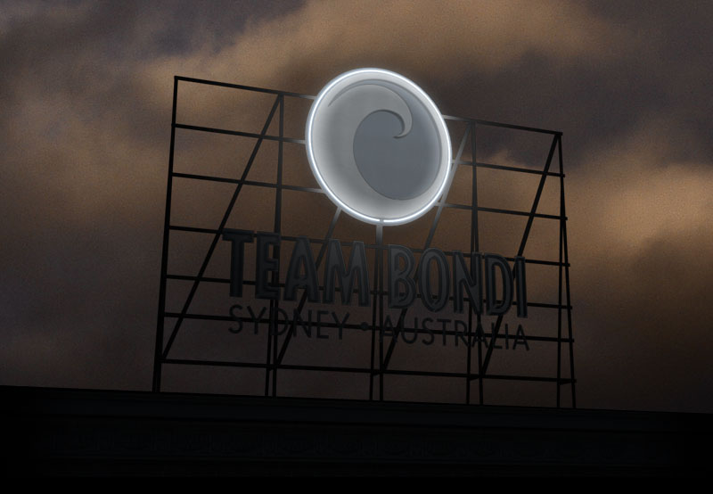

-
“All in all a fantastic game, with DLC on it’s way I can see this game being a bestseller and still replayable months after your first play through.”
➔ End Of Show -
“There are few games that I would attribute the word 'important' to, but L.A. Noire is one of them.”
9/10
➔ Atomic Gamer -
“L.A. Noire...there's no doubt it is one of the best written, acted, set and paced games out there, and this lengthy, innovative noir cop thriller is a must-play.”
5/5
➔ New Zealand Herald -
“LA Noire is the first game to lack any such element which naggingly reminds you that you're playing a video game, rather than strolling through a film or TV series.”
➔ Guardian -
“...a gripping, interesting, varied and very exciting story that rewards the player time and again. From presentation, graphics and music, this is a brilliant package and an adventure you cannot afford to miss.”
9/10
➔ Gamereactor -
“L.A. Noire redefines the concept of style when it comes to video games, bringing them to an entirely new level....There’s just so much to love about this game”
➔ Warp Zone -
“The size, scope, and sheer self-assurance of LA Noire marks a major comeback for adventure games – for interactive fiction – and, potentially, a huge leap forward for wider acceptance of the medium as a whole.”
➔ Charlie Brooker (Guardian) -
“The morally ambiguous tone and dark, mature content is the shining star of L.A. Noire. Because of the motion capture performances and refreshingly original gameplay, Noire takes the free-roaming action game in a direction never explored before.”
9/10
➔ Sydney Morning Herald -
“L.A. Noire transcends genre and the expectations of what a game can be and casts a spell that I have yet to shake.”
➔ G4TV -
“L.A. Noire is, I don't know how else to say this, absolutely amazing. The groundbreaking facial animation technology, the storytelling, the acting, the detective work...It's all superb.”
A
➔ New York Post -
“L.A. Noire combines the best of action games, the best of adventure games, the best of cinema, and the best facial animation in video games to create an experience unlike any other. I’m gushing, it’s true.”
9/10
➔ PlayStation LifeStyle -
“L.A. Noire had me more involved in its first thirty minutes than some other games do in their entirety.”
A
➔ 1UP -
“L.A. Noire is a unique game with a terrific sense of period atmosphere, absorbing investigation mechanics, and a haunting tale with plenty of moments that would be right at home in a classic film noir.”
9/10
➔ GameSpot -
“With its robust investigation and interrogation system, an authentic recreation of 1940s, and an incredible cast of characters, you’ll struggle to find a game that marries action, story, and drama better than L.A. Noire.”
9/10
➔ PlayStation Universe -
“Team Bondi and Rockstar games came together to create a remarkable game. The storyline is worthy of a blockbuster movie, and the twists and turns will keep you on your toes...The City of Angels needs a hero. That hero needs to be you.”
9/10
➔ Terminal Gamer -
“”
39/40
Famitsu -
“L.A. Noire is a staggering technological achievement, offering up a fantastically detailed open world, a hugely engrossing story, varied gameplay and some of the best acting performances ever to appear in a game.”
9/10
➔ Games Radar -
“L.A. Noire transcends genre and the expectations of what a game can be and casts a spell that I have yet to shake.”
5/5
➔ G4tv -
“...within a few minutes of pL.A.ying the game you could see right away that this was something special. The game is not only one of the best narrative driven games it is just so different then anything else on the market today.”
10/10
➔ DarkStation -
“No game released this generation has tackled the subject matter found in L.A. Noire with the same degree of intelligence and respect, and no game has blended gameplay from various genres so seamlessly.”
9/10
➔ Destructoid -
“LA Noire is a defining moment in video games on this generation, and more than just because of its use of MotionScan technology.”
10/10
➔ Total Video Games -
“L.A. Noire is a bold release, because it defies the expectations not just for the type of game Rockstar usually releases, but also for the type of game that receives this degree of care and proficiency in its execution.”
➔ Giant Bomb -
“...an amazing experience. L.A. Noire is simply an enthralling game with more heart and creativity than any other title I’ve played in recent years. Nothing quite like it has ever come before and, unless Team Bondi plans a sequel, I’d say nothing else will follow it for some time.”
9.1/10
➔ TIME.Techland -
“A stunning technical achievement but also an evolutionarily leap in adult storytelling and intelligent action gameplay.”
9/10
➔ Metro -
“Folks, this is a most amazing game...L.A. Noire is everything that people expected it to be. It has a fantastic set of stories that drive the game from beginning to end, beautifully motion captured actors and enough gameplay elements to keep the gamer deeply involved.”
10/10
➔ Digital Chumps -
“...if gaming’s holy grail is a thousand stories, well told, L.A. Noire might be the first to come within spitting distance.”
A
➔ The Onion A.V. Club -
“L.A. Noire is a risky, daring and novel approach to a game that pays off in spades. By focusing the experience on the police work, the result is a truly immersive thrill ride of a game that everyone should play. Simply put – there’s absolutely nothing like L.A. Noire.”
A+
➔ Blast Magazine -
“L.A. Noire is a game that needed making. It offers something truly unique in an unbeatable setting. Team Bondi need to be proud.”
9.3/10
➔ NowGamer -
“L.A. Noire is an intelligent game with stellar acting, game changing technology and a cast of memorable characters. It's also Rockstar Games' most refined product, making it one of the best games this high profile company has ever published.”
A
➔ Gaming Nexus -
“This is a little glimpse of an explored territory in interactive media, a hint at an incredibly exciting future that I can only hope we're hurtling towards.”
➔ Joystiq -
“...a juggernaut of a product that offers a one of a kind experience that everyone should partake in. L.A. Noire, is a cinematic masterpiece that sets the definition for every single player game out there.”
10/10
➔ The Gaming Vault
- @MarisaAwesome: Listenin to the amazing #LANoire soundtrack!! Great game, great music!!!
- @Arno0o0ob: #LAnoire Ending's Epic And Sad 2..!! <3 , One Of The Best Games I've Ever Played N My Entire Life <3 <3..!! And Jack's Way Better Than Cole!
- @jaynewk: #LaNoire is really a very well done game. Playing it so far..I love the facial capture stuff a ton. Nice Job @teambondi & @RockstarGames
- @chanteldel: I don't care if it was technically the wrong thing to do, it was extremely satisfying to charge Greg Grunberg with murder. #LANoire
- @bearloga: @teambondi You guys & gals did a terrific job with #LANoire! It was a great experience from start to finish. ...poor Cole :'(
- @davidb1969: LA Noire restored my faith in quality video games, excellent story, plus fun, unexpected gameplay, thank you #Rockstar #teambondi
- @JesusMarGarcia: @teambondi you guys did a really good job. This is one of the best video game experiences I've ever had. Keep up the good work in the future
- @Menno060877: @teambondi really enjoying LA Noire at the moment! great game, very different, i like it a lot!
- @Morphingman: @teambondi Hey just finished L.A. Noire, thanks for making the best gaming experience i've had so far. what's next? sequel or something new?
- @polashthelegend: Finished L.A. Noire last night..... What a mind-blowing game.....!!!!! The game is the GOTY for me...... Take a bow @teambondi